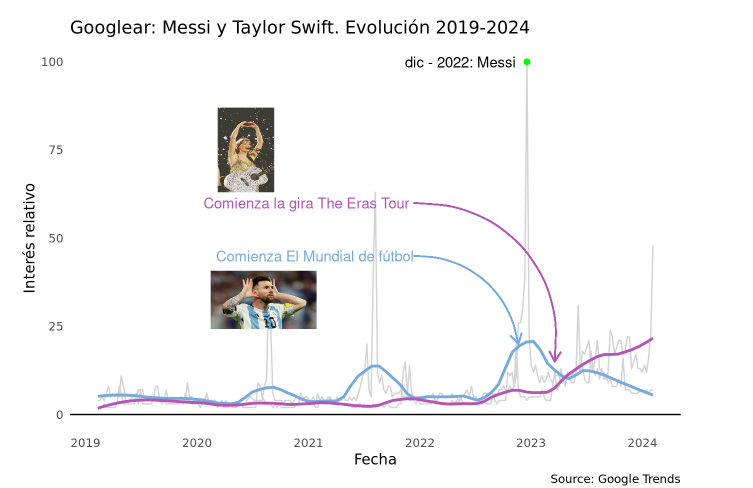
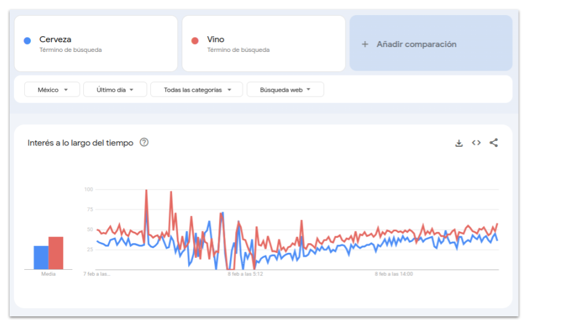
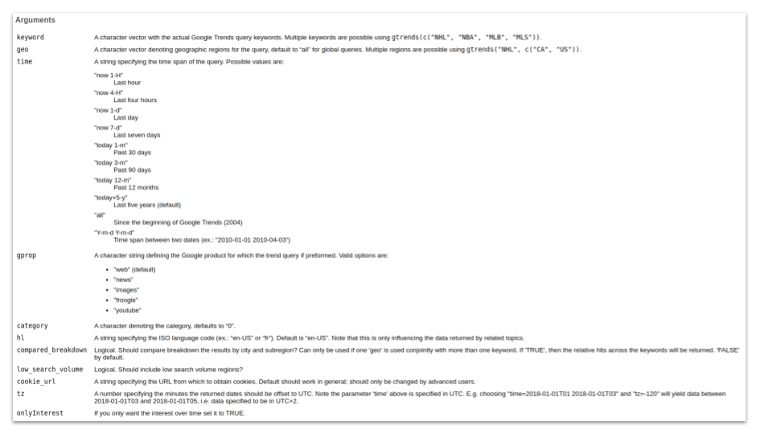

6 minutes
Analizando tendencias de Google con R: Messi vs Taylor Swift

Si uno tuviese que pensar en mega estrellas reconocidas en (casi) todos los rincones del mundo, dos nombres que sin lugar a dudas llegan a la mente son Taylor Swift y Lionel Messi. Jóvenes (¡muy!) y extremadamente talentosos, estos personajes han llegado a la cima de todo en su profesión, tocando corazones de miles de millones (!!!) y rompiendo con todo tipo de records y estadísticas a nivel mundial e histórico.
Taylor Swift en números (¡Hecho en R! - Por posit)
Ahora bien, si uno tuviese que pensar cuál de ellos es más reconocido la pregunta ya no sería tan fácil de responder. Por un lado, la cantante ♫ viene de una mega gira por el mundo que llevó su música a lugares nunca antes imaginados, barriendo records de entradas, reproducciones y mucho más. Por el otro, el jugador de fútbol ⚽ viene de traer a su país la tercer copa del mundo (⭐⭐⭐) de fútbol masculino, broche final a una carrera a la que no le quedan estadísticas por superar.
Messi en números (pieza interactiva que permite explorar los 500 goles de Messi de una manera visual. También vas a poder ver el detalle de minutos jugados y asistencias. Trabajo hecho por Pablo H. Paladino
Tendencias
Una forma de acercar una respuesta a la pregunta que nos planteamos es a través de una muy simpática herramienta de Google, llamada Google Trends. Desde aquí Google nos abre la posiblidad de urgar sobre las tendencias en la plataforma, esto es, nos disponibiliza toda la data sobre ¿qué es lo que la gente googlea?
Es así como podemos preguntarle a la plataforma si hay más interés por la cerveza o el vino, por ejemplo, y también saber cómo evolucionó esa tendencia en el tiempo (ayer, el mes pasado, hace 5 años o a lo largo de toda la historia -de Google Trend, al menos, que tiene como punto de partida el año 2004). Una última capa de análisis puede ser la geográfica, identificando cómo se comporta esta tendencia por país o región de un país en particular.

Pero, ¿y R qué tiene que ver? Como era de esperar, ¡para -casi- todo en la vida hay un paquete de R! Y para Google Trends también.
Analizando tendencias con {gtrendsR}
{gtrends} es un paquete muy sencillo que replica la dinámica de la aplicación Google Trends desde la Web, pero sin tener que salir de nuestra plataforma con la que trabajamos en R (en mi caso, Rstudio).
¿Cómo se usa?
La función principal es gtrends(), que cuenta con los parámetros necesarios para delimitar bien la búsqueda que estamos queriendo hacer. Lo primero es crear un objeto llamado tendencias en donde almacenaremos los resultados de la consulta a la API de Google:
library(gtrendsR)
tendencias <- gtrends(
keyword = c("Messi", "Taylor Swift"),
gprop = "web",
time = "today+5-y")
Como podrás ver, agregué los términos “Messi” y “Taylor Swift”, junto a parámetros como gprop = "web" y time = "today+5-y". Para conocer más sobre estos parámetros no dudes en consultar la documentación de la función con ?gtrends:

Lo que la función gtrends() devuelve es una lista, en cuyo interior podemos encontrar toda la información que trae desde Google Trends, entre las más importantes:
interes_over_time: la tendencia en el tiempointeres_by_country: la tendencia a nivel de países
names(tendencias)
## [1] "interest_over_time" "interest_by_country" "interest_by_region"
## [4] "interest_by_dma" "interest_by_city" "related_topics"
## [7] "related_queries"
El siguiente paso es extraer en un objeto aparte el dataframe de interés, en mi caso, aquel que contenga la información para analizar las búsquedas en el tiempo, dejando la capa geográfica para otro momento.
library(tidyverse)
tend_tiempo <- tendencias$interest_over_time |>
mutate(hits = case_when(hits == "<1" ~ ifelse(is.character(hits), "0", 0),
.default = hits),
hits = as.numeric(hits))
Notarás un pequeño proceso de limpieza sobre la variable hits, la cual contiene una categoría llamada >1, la cual indica un interés tan bajo que ya no se mide. Procedemos a borrar esa categoría y reemplazarla por un 0, para poder seguir trabajando con la variable como numérica.
Luego procedemos a extraer ciertos valores en los que nos gustaría enfocarnos al momento de visualizar, a modo de hitos, y que servirán para contextualizar las tendencias:
hits_min <- min(tend_tiempo$hits)
hits_max <- max(tend_tiempo$hits)
date_max <- tend_tiempo |> filter(hits == hits_max) |> pull(date)
quien_max <- tend_tiempo |> filter(hits == hits_max) |> pull(keyword)
date_min <- tend_tiempo |> filter(hits == hits_min) |> pull(date) |> max()
¡a graficar!:
Ya con los datos listos, vamos a poner manos en la masa para crear nuestra visualización. Para ellos hemos decidido utilizar al gran paquete {ggplot2}. Arranquemos por lo mínimo e indispensable, la estructura básica de nuestro gráfico:
p <-
tend_tiempo %>%
ggplot(aes(x = date, y = hits, group = keyword, col = keyword)) +
geom_line(color = "lightgrey")
p

Aquí ya podemos ver, día a día, cómo evolucionó la búsqueda de Messi y Taylor Swift en Google. Agrueguemos una línea que nos ayude a interpretar la serie de forma más homogénea, auxiliandonos con geom_smooth(), sumándo también algunas configuraciones estéticas:
p <- p +
geom_smooth(span=0.2, se=FALSE) +
scale_color_manual(values = c("#75aadb", "#b454b4")) +
geom_point(x = date_max, y = hits_max, color = "green") +
geom_hline(yintercept = 0) +
scale_x_datetime(breaks = "1 year", date_labels = "%Y")
p

Podemos notar ahora como, en términos generales, Messi fue más googleado a lo largo de la serie, con un gran pico hacia fines del 2022 y principios del 2023 y, también, una clara excepción para mediados del 2023 en adelante. ¿A qué se debe?
Paradójicamente, fuimos a googlear fechas y encontramos información que ayudaría a entender estos picos y cambios de tendencia. En nuestro gráfico, nos apoyaremos en la función annotate() para agregar dicha data, y guiar mejor a la interpretación de la visualización:
library(glue)
p <- p +
annotate(geom = "text", x = date_max, y = hits_max,
label = glue("{month(date_max, label = TRUE)} - {year(date_max)}: {quien_max}"),
hjust = 1.1) +
### Taylor
geom_curve(x = 1639184000, xend = 1679184000,
y = 60, yend = 15,
curvature = -0.5, color = "#b454b4",
arrow = arrow(length = unit(0.03, "npc"))) +
annotate(geom = "text",
x = date_max, y = 60,
color = "#b454b4", hjust = 1.57,
label = "Comienza la gira The Eras Tour") +
### Messi
geom_curve(x = 1639184000, xend = 1668902400,
y = 45, yend = 20,
curvature = -0.4, color = "#75aadb",
arrow = arrow(length = unit(0.03, "npc"))) +
annotate(geom = "text",
x = date_max, y = 45,
color = "#75aadb", hjust = 1.57,
label = "Comienza El Mundial de fútbol") +
labs(title = glue("Googlear: Messi y Taylor Swift. Evolución {year(today())-5}-{year(today())}"),
x = "Fecha", y = "Interés relativo", caption = "Source: Google Trends") +
theme_minimal() +
theme(
panel.grid.major = element_blank(),
panel.grid.minor = element_blank(),
legend.position = "none",
text = element_text(family = "Gamja Flower")
)
p

Para el toque final agregamos unas imágenes de ambos y un agregamos un poco más de pinceladas al cuadro:
### Agrego logo de mate
library(png)
library(grid)
messi <- readPNG(here::here("content/draft/2021-12-01-r-tendencias-de-google/img/messi.png"), native = TRUE)
taylor <- readPNG(here::here("content/draft/2021-12-01-r-tendencias-de-google/img/taylor.png"), native = TRUE)
g_messi <- rasterGrob(messi,
width = .2,
height = .3)
g_taylor <- rasterGrob(taylor,
width = .2,
height = .3)
p <- p +
annotation_custom(g_messi, xmin = 1521728000, xmax = 1671728000, ymin = 5, ymax = 60) +
annotation_custom(g_taylor, xmin = 1551728000, xmax = 1631728000, ymin = 35, ymax = 115)
Ahora sí
Finalmente, llegamos a nuestro gráfico combinando una fuente de datos como la API de Google, preparación de los datos y visualización de la información obtenida:¡Gualá!

google trends ggplot2 tendencias
cienciadedatos googletrends rstatES RStats
1229 Words
2024-02-07 18:00